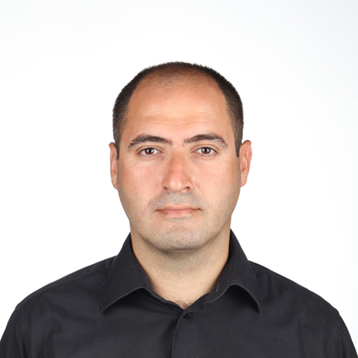

Welcome
Dr. Ibrahim Kucukdemiral is a Reader in the Department of Engineering within the School of Science and Engineering at Glasgow Caledonian University. He serves as Chair of the IEEE Control Systems Chapter of the UK & Ireland Section and is a committee member of the IEEE Region 8 Conference Coordination Committee. He chairs the Industrial Advisory Board for the Electrical and Mechanical Engineering departments and leads the Robotics for the Common Good research group.
 Google Scholar
Google Scholar
 ORCID
ORCID
Academic Background
Dr. Kucukdemiral completed his BSc, MSc, and PhD degrees in Electrical Engineering at Yildiz Technical University (YTU) in 1997, 1999, and 2002, respectively. His career spans positions as Research and Teaching Assistant (1998–2004), Assistant Professor (2004–2010), Associate Professor (2010–2015), and Full Professor (2015–2017) at YTU. He was instrumental in establishing the Control and Automation Engineering department at YTU in 2008.
Research Interests
His research covers a broad range of control engineering topics, including robust, optimal, and adaptive control systems, model predictive control, computational and data-driven control, with applications in mechatronics, renewable energy systems, autonomous vehicles, and robotics. He has been actively involved in significant research collaborations, such as the EPSRC-funded ROBMAN project on robust robotic manipulation underwater.
Professional Activities
As a Fellow of the Higher Education Academy (FHEA), a Senior Member of IEEE, and a member of IFAC, Dr. Kucukdemiral has contributed extensively through teaching, supervision, and module leadership across institutions including YTU, the Turkish Airforce Academy, and the University of Sharjah.
He is an editor of Results in Engineering (Q1) and serves on the editorial boards of Ocean Engineering (Q1) and the Turkish Journal of Electrical Engineering & Computer Sciences. He has supervised five PhD students to completion and continues to provide consultation and review services globally.
Dr. Kucukdemiral serves in the EPSRC Peer Review College and as an external examiner for several universities in England. He is also a member of the Thematic Leadership Group for Robotics and Autonomous Systems, a strategic partnership among Scotland's universities aimed at securing Scotland's standing as a world-class centre of research excellence in engineering.